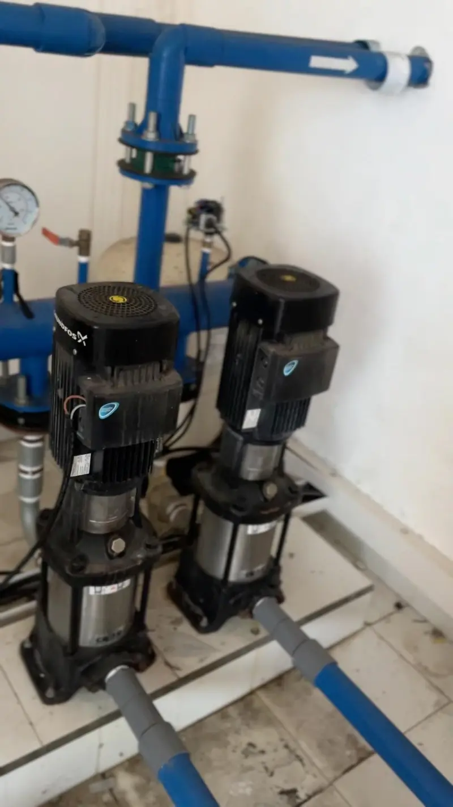

Servis & Perbaikan Pompa Air
Pompa tidak menyala, air tidak keluar, atau tekanan lemah? Ceritakan kendalanya, kami bantu periksa penyebabnya.
Tanya via WhatsAppServis · Instalasi · Perawatan Pompa Air
Solusi Air Bersih & Instalasi Terpercaya untuk membantu kebutuhan pompa air, perawatan, dan sistem distribusi air Anda.

Layanan
Dari pompa yang bermasalah sampai pemasangan baru, ceritakan kebutuhan Anda dan kami bantu mencari langkah yang tepat.
Pompa tidak menyala, air tidak keluar, atau tekanan lemah? Ceritakan kendalanya, kami bantu periksa penyebabnya.
Tanya via WhatsAppPemasangan pompa beserta jalur pipa yang disesuaikan dengan kebutuhan bangunan Anda.
Tanya via WhatsAppPemeriksaan rutin agar pompa tetap bekerja stabil dan masalah kecil tidak berkembang menjadi kerusakan besar.
Tanya via WhatsAppPengecekan komponen seperti seal dan bagian pompa lain yang mulai aus, lalu penggantian bila diperlukan.
Tanya via WhatsAppPenanganan jalur pipa, sambungan, dan katup yang berhubungan dengan sistem pompa Anda.
Tanya via WhatsAppUntuk pompa bertingkat dan sistem pompa bertekanan pada villa, hotel, atau bangunan komersial.
Tanya via WhatsAppBingung memilih pompa atau menentukan langkah berikutnya? Diskusikan kebutuhan Anda terlebih dahulu.
Tanya via WhatsAppTentang Kami
Surya Service Pompa Bali adalah usaha jasa servis, perbaikan, instalasi, dan perawatan pompa air yang melayani Seluruh Bali. Solusi Air Bersih & Instalasi Terpercaya.
Lihat dokumentasi pekerjaan kami atau alur layanannya.
Layanan kami berpusat pada kebutuhan pompa air, perawatan, dan sistem distribusi air.
Foto yang tampil di website ini adalah dokumentasi pekerjaan, bukan foto stok.
Ceritakan kendala Anda dan kirim foto atau video untuk membantu memahami kondisi pompa.
Kami membahas apa yang perlu dikerjakan sebelum Anda memutuskan.
Jenis layanan dan alur pemesanan dijelaskan sederhana, tanpa istilah yang membingungkan.
Hasil Pekerjaan
Foto-foto berikut adalah dokumentasi nyata dari pekerjaan kami. Ketuk gambar untuk memperbesar.
Dokumentasi instalasi pompa air
Komponen pompa air
Pemeriksaan unit pompa air
Proses Layanan
Lima langkah umum dari konsultasi sampai pengerjaan. Langkah dapat menyesuaikan kondisi di lapangan.
Kirim pesan lewat WhatsApp.
Ceritakan masalah atau kebutuhan pompa air Anda.
Bila diperlukan, untuk membantu memahami kondisi pompa.
Bahas pemeriksaan, estimasi biaya, dan jadwal.
Dilakukan setelah detail disepakati bersama.
Area Layanan
Kami melayani kebutuhan pompa air di seluruh Bali. Ketersediaan kunjungan ke lokasi Anda dan biaya transportasi dikonfirmasi lewat WhatsApp.
Belum yakin lokasi Anda terjangkau? Tanyakan langsung, atau lihat dulu layanan yang tersedia.
Seluruh Bali
Kunjungan dan biaya transportasi dikonfirmasi via WhatsApp.
FAQ
Ya, Surya Service Pompa Bali melayani kebutuhan pompa air di wilayah Bali. Ketersediaan kunjungan ke lokasi Anda dan biaya transportasi dikonfirmasi lewat WhatsApp.
Bisa. Ceritakan jenis bangunan, kebutuhan air, dan kondisi jalur pipa Anda, lalu kita diskusikan kebutuhan pemasangannya melalui WhatsApp.
Hubungi kami lewat WhatsApp, jelaskan kendala atau kebutuhan Anda, dan kirim foto atau video bila ada. Biaya bergantung pada kondisi pompa dan pekerjaan yang dibutuhkan, sehingga dibahas setelah kami memahami masalahnya.
Akan sangat membantu bila Anda menyiapkan: gejala yang dialami dan sejak kapan, merek dan tipe pompa (biasanya tertera pada label di bodi pompa), foto atau video pompa dan instalasinya, serta lokasi pekerjaan.
Bisa kami bantu periksa. Penyebabnya beragam, mulai dari komponen pompa, sambungan pipa, hingga sumber air, sehingga kepastian diagnosis baru didapat setelah pengecekan langsung. Kirimkan gejalanya lewat WhatsApp terlebih dahulu.
Kami menerima konsultasi untuk bangunan komersial seperti villa, hotel, dan gedung. Cakupan pekerjaan dan jadwal dikonfirmasi setelah kebutuhan Anda dipahami.
Ceritakan kebutuhan atau kendala pompa air Anda kepada Surya Service Pompa Bali untuk mendiskusikan langkah selanjutnya.
Konsultasi via WhatsApp